Ayuda para el usuario
Modo lista
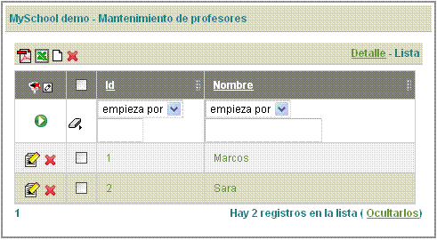
Mediante este módulo el usuario podrá:
- Filtrar por cualquier columna o combinación de ellas: basta introducir los valores deseados en las columnas y pulsar sobre el botón de filtrado
 .
.
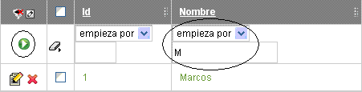 - Generar informes: pulsando sobre los íconos de listado, ó , se ejecutará un informe (en formato PDF o Excel) con los datos que haya en pantalla.
- Ordenar por cualquier columna: basta con pulsar sobre el encabezado de la columna:
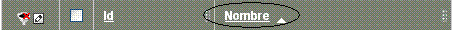
Te permitirá ordenar ascendente (pulsando una vez) ó descendentemente (al pulsar una segunda vez). - Editar un registro: pulsando en cualquier parte de la fila, pulsando sobre el ícono de editar
 , o pulsando sobre el vínculo de detalle 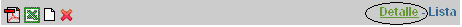
, o pulsando sobre el vínculo de detalle 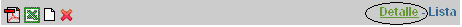 - Borrar registros: pulsando sobre el botón
 . Podremos borrar varios registros seleccionando el botón borrar de la parte superior, o bien borrar uno solo seleccionando el botón de borrado que hay en cada fila:
. Podremos borrar varios registros seleccionando el botón borrar de la parte superior, o bien borrar uno solo seleccionando el botón de borrado que hay en cada fila:
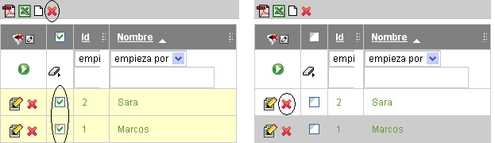 - Personalizar la lista: pulsando sobre el ícono de personalizar , el usuario podrá modificar la lista añadiendo, quitando o moviendo el orden de los campos:
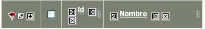
Mediante los botones y , se podrán mover las columnas a la izquierda o a la derecha; y con se eliminará una columna de la fila.
Pulsando sobre se accederá a una lista con todos los campos disponibles para ese mantenimiento,
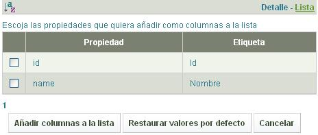
de esta forma bastaría con seleccionar los campos deseados y pulsar sobre el botón 'Añadir columnas a la lista' para añadir nuevos campos a la lista.
Modo detalle
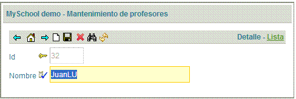Mediante este modo el usuario podrá:
- Navegar entre los distintos registros de la lista: mediante los botones 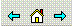, se podrá acceder al primer registro o a los registros anteriores o posteriores al visualizado.
- Grabar nuevo registro: primero pulsando sobre el botón para dar de alta nuevo registro , después rellenando los datos por pantalla y finalmente pulsando sobre el botón de guardado 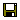.
- Eliminar registro: una vez estés visualizando el registro deseado, basta con pulsar sobre el botón de borrar
- Buscar un registro: pulsar sobre el botón de buscar , aparecerá un cuadro de diálogo para poder introducir los datos deseados a buscar:
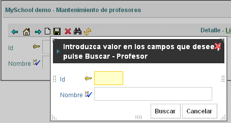 - Refrescar pantalla: refrescará los datos del registro visualizado. Descartará las modificaciones que no hayan sido grabadas y se recuperará los valores iniciales.